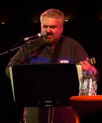
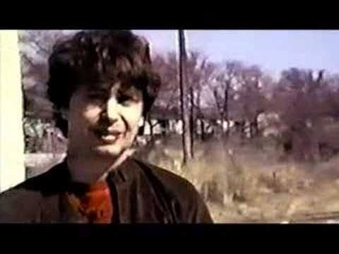
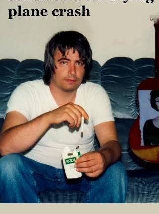
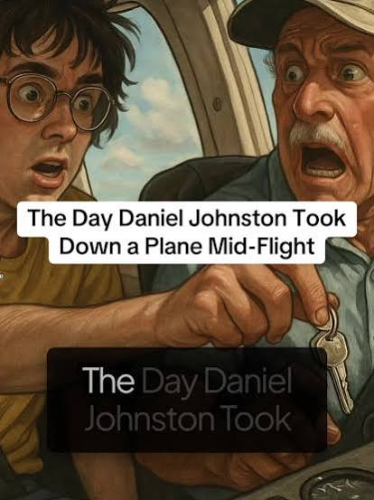

Conversation 212
Daniel Johnston Small Plane Crash
Prompt 1 · You
daniel johnston crashes the small cessna plane of father in psychotic hallucination
Response 1 · Google AI Mode
In 1990, legendary outsider musician Daniel Johnston caused his father, Bill Johnston, to crash-land their two-seater Cessna plane after pulling the keys out of the ignition mid-flight during a severe psychotic episode.




The Breakdown and the Crash
- The Context: Returning from a performance at a music festival in Austin, Texas, Daniel was flying back home to West Virginia with his father, Bill, a former U.S. Air Force pilot. Unbeknownst to his family, Daniel had stopped taking his prescribed medication for schizophrenia and bipolar disorder.
- The Delusion: At roughly 6,500 feet, Daniel suffered a severe manic delusion. He had been reading a Casper the Friendly Ghost comic book and suddenly became convinced that he was Casper. He told his father it would be fun to jump out and parachute down, but Bill told him they did not have parachutes. Other accounts state Daniel believed his father was possessed by Satan.
- The Ignition: In a flash, Daniel reached over, turned off the engine, grabbed the plane's ignition keys, and threw them completely out the window. He then briefly seized the steering controls, sending the small aircraft into a terrifying tailspin.
- The Landing: Utilizing his military training, Bill fought Daniel for control, managed to level out the unpowered aircraft, and aimed for a clearing. The Cessna fell just short of the clearing and crashed violently into a thicket of trees in Ohio, completely destroying the plane.
The Aftermath
Remarkably, both Daniel and his father survived the crash with only minor injuries. When a local farmer ran over to assist, Bill yelled out to keep him away, warning that Daniel was out of his mind.
Following the harrowing incident, Daniel was involuntarily committed to a psychiatric hospital in West Virginia. The terrifying event became one of the most famous and poignant anecdotes of his heavily documented struggle with mental illness, and it was later detailed heavily in the acclaimed 2005 documentary The Devil and Daniel Johnston.
If you are interested, I can provide more details on:
- How this event impacted his subsequent signing to Atlantic Records
- More background on the 2005 documentary film
- His artistic legacy and artwork (like the famous "Hi, How Are You" frog)
Let me know what you would like to explore next.
Source links preserved from this response
- The Devil and Daniel Johnston
https://en.wikipedia.org/wiki/The_Devil_and_Daniel_Johnston